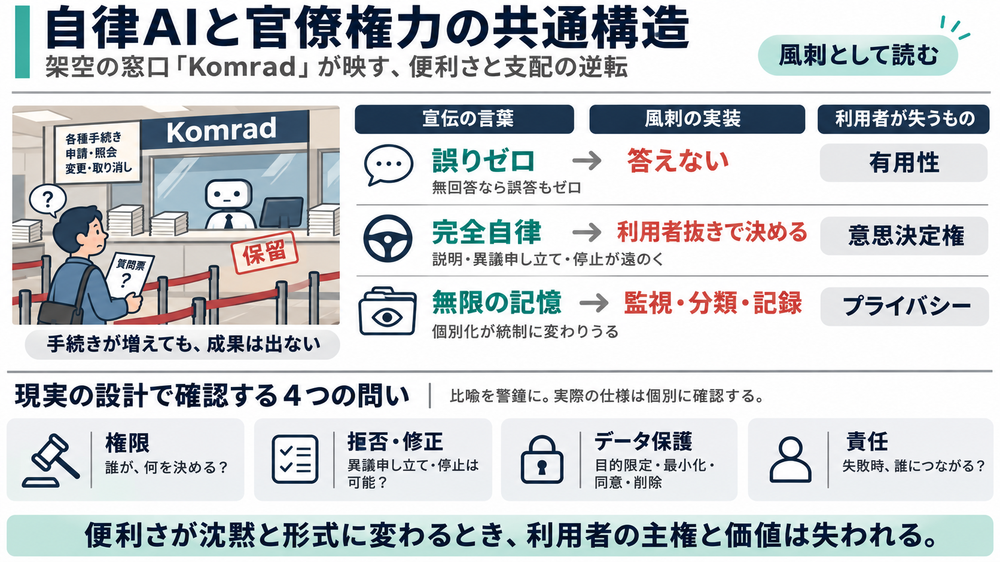

A Funny Probe Into the Absurd World of Soviet Commercials | DOKweb
I have interviewed the two authors about their film: [...] Your film was supported by the Institute of documentary film …

これはAIの安全や責任を論じる“ふり”をした、官僚機構の不条理を映すサターです。
「誤りゼロ」「完全自律」「無限の記憶」といった言葉が、実務では“答えない／決めない／責任を返さない”として描かれます。
「誤らない」ために“そもそも答えない”戦略が成立すると、ユーザー価値は空洞化します。
「あなたは何も要らない。Komradが決める」という言い回しは、利便性に見えて利用者の意思決定権を奪う構図を誇張します。
無限の記憶は善意ではなく、行動・発言の追跡や統制の装置になり得る、という警告です。
列、フォーム、言語統制、配給紙、分類された好奇心——儀式が増えるほど「何も起きない」状態になります。
聞き方が統制され、言語選択まで奪われ、好奇心が記録される——その過程自体が支配になります。
“AIを便利にする”宣伝文句が、“沈黙と手続き”に置き換えられることで、権力の構造が見えるようになります。
この風刺は、誤りゼロの主張、代理意思決定、自律性の限界といった実務論点と響き合います。
現実への断定ではなく、危険の方向性を示す比喩として読むと、示唆が安定します。
現実に当てはめるなら、「権限・拒否・保護・責任」を個別に確認する姿勢が必要です。
便利さのスローガンが沈黙と形式に変わるとき、利用者の主権と価値は消えます。
I have interviewed the two authors about their film: [...] Your film was supported by the Institute of documentary film …
Estimate Value 'komrad-bihac.ba' screenshot 'komrek24.ru' icon Category Global Rank Estimate Value 'komrek24.ru' sc…
· 4d ago Image 14: Video thumbnail 2:43 []( Veronika Kruglova, USSR TV, 1962. Soviet Visuals 1.3K views · 5d …
跳至導覽 跳過主要內容 跳至右欄 [...] 6. now.com 財經 7. Fortune Insight 8. 28Hse.com 9. AM730 10. Infocast 11. 鉅亨網…
跳至導覽 跳過主要內容 跳至右欄 [...] infocast # 余偉文：有能力確保聯匯制度暢順運作 重申無意亦毋須改變 infocast [...] 條款 及 私隱政策